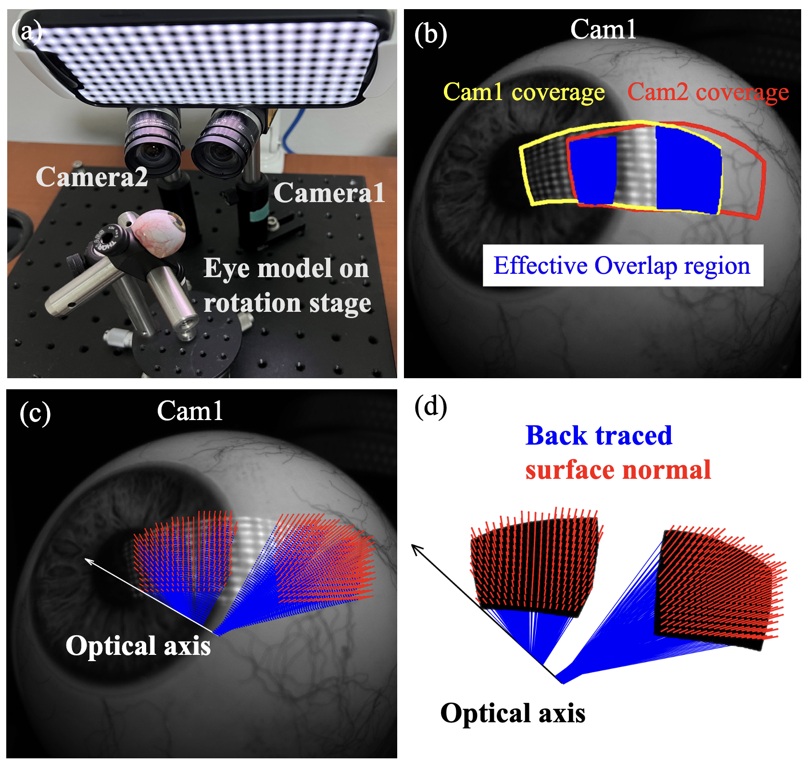

|
Tianfu Wang 王天夫 I am a first year PhD student in the University of Maryland, College Park supervised by Prof. Christopher Metzler. Previously I was a master student in ETH Zürich where I worked with Anton Obukhov, Menelaos Kanakis, Prof. Konrad Schindler, and Prof. Luc Van Gool on NeRF and diffusion models. Prior to that, I obtained my undergraduate degree from Northwestern University. I worked with Prof. Oliver Cossairt and Prof. Florian Willomitzer. I was also fortunate to work with Prof. Jack Tumblin, who inspired my interest in visual computing. I am always enthusiastic about building and utilizing intelligent systems that not only help us understand and better represent our 3D world, but also allow us to craft our own virtual realms. More specifically, my research interest lies at the crossroads of graphics, vision, and computational photography, including areas such as neural and inverse rendering, generative AI in computer vision, and innovations in imaging and optics.
I am actively looking for internship opportunities in the summer of 2026. If you are interested in my profile, please feel free to reach out to me via email. |

|
Publications
* denotes equal contribution|
|
Marigold: Affordable Adaptation of Diffusion-Based Image Generators for Image Analysis
Bingxin Ke*, Kevin Qu*, Tianfu Wang*, Nando Metzger, Shengyu Huang, Bo Li, Anton Obukhov*, Konrad Schindler Arxiv preprint, in review, 2025 Project Page / Paper / Code / Models & Demos A novel diffusion-based approach for dense prediction, providing foundation models and pipelines for a range of computer vision and image analysis tasks, including monocular depth estimation, surface normal prediction, and intrinsic image decomposition. |
 |
Flash-Split: 2D Reflection Removal with Flash Cues and Latent Diffusion Separation
Tianfu Wang*, Mingyang Xie*, Haoming Cai, Sachin Shah, Christopher Metzler CVPR, 2025 Paper / Supp A robust 2D reflection removal method leveraging physical flash/no-flash cues with latent-space diffusion separation. |
|
|
Repurposing Pre-trained Video Diffusion Models for Event-based Video Interpolation
Jingxi Chen, Brandon Y. Feng, Haoming Cai, Tianfu Wang, Levi Burner, Dehao Yuan, Cornelia Fermüller, Christopher A. Metzler, Yiannis Aloimonos CVPR, 2025 Project Page / Paper Fine-tuning a pre-trained video diffusion model on event camera data turns it into a state-of-the-art event-based video interpolater and extrapolator with high temporal resolution. |
|

|
Accurate Eye Tracking from Dense 3D Surface Reconstructions using Single-Shot Deflectometry
Jiazhang Wang, Tianfu Wang, Bingjie Xu, Oliver Cossairt, Florian Willomitzer Nature Communications, 2025 Paper We present an accurate and fast gaze tracking method using single-shot phase-measuring-deflectometry (PMD), taking advantage of dense 3D surface measurements of the eye surface. |
|
|
DGInStyle: Domain-Generalizable Semantic Segmentation with Image Diffusion Models and Stylized Semantic Control
Yuru Jia, Lukas Hoyer, Shengyu Huang, Tianfu Wang, Luc Van Gool, Konrad Schindler, Anton Obukhov ECCV, 2024 Project Page / Paper We specialize a pre-trained latent diffusion model into an efficient data generation pipeline with style control and multi-resolution semantic adherence, improving downstream domain generalization performance. |
 
|
Differentiable Deflectometric Eye Tracking
Tianfu Wang, Jiazhang Wang, Oliver Cossairt, Florian Willomitzer IEEE TCI, 2024 Paper Using a differentiable renderer to simulate reflection light transport allows us to take advantage of dense sturctured screen illumination to accurately optimize eye gaze direction. |

|
Breathing New Life into 3D Assets with Generative Repainting
Tianfu Wang, Menelaos Kanakis, Konrad Schindler, Luc Van Gool, Anton Obukhov BMVC, 2023 (Oral Presentation) Project Page / Paper / Code Our method lifts the power of generative 2D image models, such as Stable Diffusion, into 3D. Using them as a way to synthesize unseen content for novel views, and NeRF to reconcile all generated views, our method provides vivid painting of the input 3D assets in a variety of shape categories. |
 
|
A Mitsuba-based Study on Trade-offs Between Projection and Reflection Based Systems in Structured-Light 3D Imaging
Tianfu Wang, Florian Schiffers, Florian Willomitzer, Oliver Cossairt OPTICA COSI, 2021 Paper / Code We present a first study on the trade-offs between projection and reflection based 3D imaging systems under diffusive and specular reflection mixtures. Experiments are conducted in our projection/reflection simulator framework using the Mitsuba2 renderer. |
Cool Stuff |
|
|
Modeling and Analysis of Real Time 3D SPH Fluid Simulation on WebGL
Tianfu Wang, Jack Tumblin Northwestern University Summer Undergraduate Research Grant Advanced, 2020 Metaballs meet Smooth Particle Hydrodynamics (SPH) |
MiscAside from research, I delight in the symphony of flavors that dance on the tongue (good food) and the harmonious melodies that serenade the ears (music). A few of my musical heroes include 竇唯 (Dou Wei), Radiohead, Brian Eno, and Fleet Foxes. |
|
This is a Jon Barron website. Thanks Jon! |